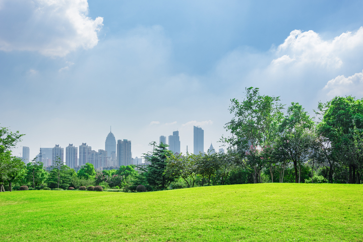

Bem vindo ao verde inteligente!

Somos uma empresa apaixonada por sustentabilidade urbana e comprometida em construir um futuro mais verde e inteligente para as cidades. Aqui, você encontrará soluções inovadoras, conhecimentos especializados e inspiração para transformar sua comunidade em um lugar mais sustentável.
Nossa missão é promover a adoção de práticas sustentáveis, desde o planejamento urbano até a gestão de recursos, para criar cidades mais resilientes e equilibradas. Acreditamos que cada pequena ação conta e que juntos podemos fazer a diferença.
7 maneiras de tornar sua cidade mais sustentável e inteligente
postado em 20 de maio de 2022
Olá, leitores!
Hoje, vamos explorar sete maneiras práticas de transformar sua cidade em um lugar mais sustentável e inteligente. À medida que o mundo enfrenta desafios ambientais e sociais, é essencial que todos façamos a nossa parte para criar comunidades mais verdes e conscientes. Vamos lá...
Leia mais
Construindo um futuro sustentável: O papel das cidades verdes e inteligentes
postado em 21 de maio de 2022
Hoje, vamos explorar o papel fundamental das cidades verdes e inteligentes na construção de um futuro sustentável. Com o crescimento acelerado da população urbana, é crucial repensar nossas abordagens e adotar soluções inovadoras para enfrentar os desafios ambientais e promover o bem-estar das comunidades. Vamos descobrir como as cidades verdes e inteligentes podem liderar essa transformação...
Leia mais